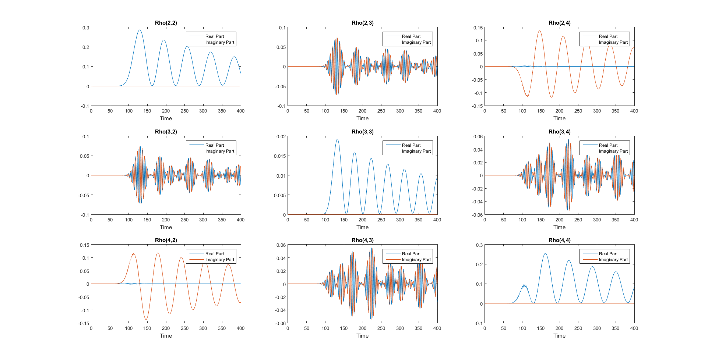

plotRoh
creates multiple subplots, one for each diagonal element of the density matrix. Very popular
Contents
Syntax
- plotRoh
- plotRoh(box)
Description
plotRoh(box) creats subplots of all elements of the density matrix. Since this is often unfeasible, because even relatively small systems have to many density matrix entries to visualize them all at once, an optional box parameter can be given to the method. Such a box is defined by a vector with for entries that define the upper left and lower right corner.
Example: Qbit in a cavity
clear; close all; s = System; a = Nlevel(1); s.addEntity(a,'qbit'); s.addEntity(Qoscillator(3,1),'cavity'); s.addCoupling('qbit','cavity',0.05); s.addDissipation('qbit',200); s.addExternalField(Gausspulse(0.04,100,30,1),'qbit'); s.setTmax(400); s.setTimestep(0.1); s.simulate; figure('units','normalized','outerposition',[0 0 1 1]) %make full screen figure s.plotRoh([2 2 4 4]); %plot a box section of the density matrix, wiht upper left corner (2,2) and lower right corner (4,4).